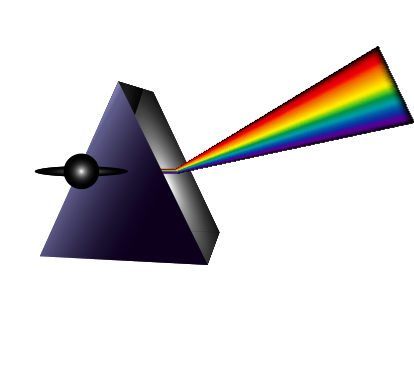

Em uma confecção de laudo técnico, é de grande importância o perito saber interpretar a receita prescrita pelo especialista, pois será com base nela que os óculos ou as lentes de contato serão conferidos na necessidade de um laudo técnico para dioptrias, verificando assim suas possíveis discordâncias.
Neste material, você compreenderá os campos da prescrição em seus respectivos campos e a origem dos valores de índices de refração das lentes a serem indicadas e acompanhará exemplos de seus possíveis resultados no cotidiano da óptica.
Quando o cliente se queixa de qualquer desconforto quanto ao uso dos óculos ou das lentes de contato, deve-se confrontar o produto com a prescrição.
Qualquer uma dessas queixas, quando não solucionadas pela óptica, podem dar origem à solicitação de um laudo técnico, em que o perito realizará o confronto entre o produto e a prescrição e documentará conforme foi solicitado.
Algumas vezes são tomadas todas as medidas devidas com precisão, porém a prescrição pode ter algum equívoco, e isso trará o resultado de um laudo com as conformidades ópticas corretas, então o cliente terá de consultar seu especialista novamente para a retificação do erro prescrito.
Sabe-se que a refração é o fenômeno que acontece em meios transparentes (refringentes), em que ocorre uma mudança de velocidade dos raios luminosos ao atravessarem de um meio mais refringente para um meio menos refringente.
Toda lente oftálmica terá um valor que representa o seu índice de refração que influenciará no peso, na espessura e nas curvaturas das lentes. Quanto maior for o índice de refração, mais fina ficará a lente e com curvaturas mais planas, ou seja, para qualquer prescrição de óculos, uma lente feita de um material com um índice de refração elevado será mais fina do que uma lente feita de um material com um índice de refração inferior. O peso dependerá do material empregado para a fabricação.
O índice de refração próprio de cada material é descoberto por meio de um cálculo que você acompanhará a seguir.
Mede-se o índice de refração (n), dividindo o valor da velocidade da luz de um meio para outro.
Exemplo: há dois meios, o A e o B
n = A velocidade da luz no ar
n = B velocidade da luz no material
Sabe-se que a velocidade da luz no ar é de 300.000 km/h
Supondo que a velocidade da luz no material B seja 200.000 km/h
n = 300.000/200.000 = 1.500
Você terá uma lente com índice de refração igual a 1.500.
Esse exemplo é utilizado para entender a origem do índice de refração próprio dos materiais. No cotidiano de trabalho, não se faz necessário esse tipo de cálculo, pois existem tabelas impressas com os dados de índices de refração respectivos de cada material, disponibilizadas pelos fabricantes de lentes oftálmicas, incluindo, muitas vezes, as dioptrias indicadas para fabricação.
| ÍNDICE DE REFRAÇÃO | LENTE | DIOPTRIA |
|---|---|---|
| 1.49 | Resina | Até + ou - 1.00 |
| 1.56 | Resina | De + ou - 1.25 até + ou - 2.00 |
| 1.59 | Policarbonato | De + ou - 2.25 até + ou - 3.00 |
| 1.61 | Resina alto índice | De + ou - 3.25 até + ou - 4.00 |
| 1.67 | Resina alto índice | De + ou - 4.25 até + ou - 6.00 |
| 1.74 | Resina alto índice | De + ou - 6.25 até + ou - 10.00 |
| 1.70/1.80/1.90 | High light | Acima de + ou - 10.25 |
| * tabela sugestiva | ||
Figura 1 – Tabela de índice de refração
Fonte: adaptado de Silva (2022)
Veja, a seguir, alguns exemplos de queixas que podem surgir quando novos óculos são confeccionados e as lentes apresentam índice de refração diferente dos óculos anteriores.
Exemplo 1
Um usuário de óculos que costumava fazer uso de lentes de resina (orgânicas) resolve trocar por lentes de cristal, acreditando que são mais finas e transparentes.
Resultado: queixa de lentes mais pesadas.
Exemplo 2
Um usuário utilizava lentes com índice de refração maior e optou por lentes com índice de refração menor, solicitando que fossem adaptadas na mesma armação.
Resultado: as bordas das lentes ficaram mais espessas que as anteriores.
Exemplo 3
Cliente fazia uso, por bastante tempo, de um menor índice de refração e mudou para um maior.
Resultado: as imagens não lhe parecem nítidas, em razão das alterações na curva base da lente, que fica mais plana, diferente da curva base das lentes que ele usava.
Em todos os três casos, é possível solicitar a confecção de um laudo técnico no laboratório, no qual o perito verificará que as lentes correspondem ao que foi solicitado pela óptica e se limitará a isso, pois o ideal seria, no momento da venda, ter esclarecido ao cliente as diferenças sobre os materiais e suas propriedades, a fim de evitar problemas de adaptação.
A evolução tecnológica tem ampliado cada vez mais a gama de materiais disponíveis para a fabricação de lentes. A indicação do material dependerá da prescrição óptica que acompanha a interpretação, e caberá ao perito saber identificar a lente e seu perspectivo índice de refração na elaboração do laudo, avaliando a situação, a fim de identificar a provável causa da não adaptação do usuário ao novo índice de refração.